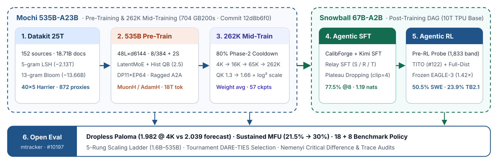
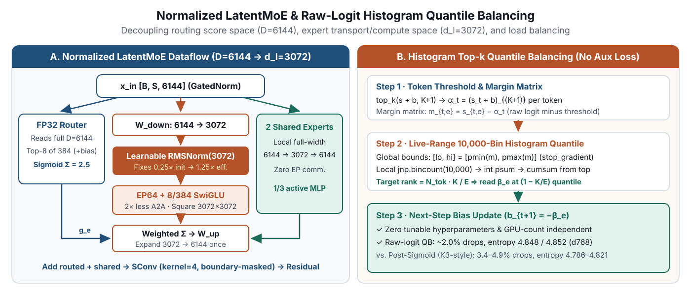
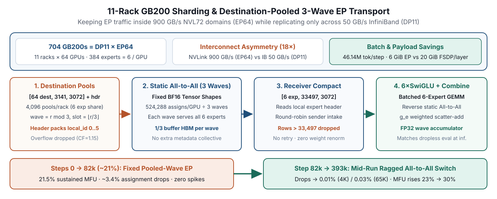
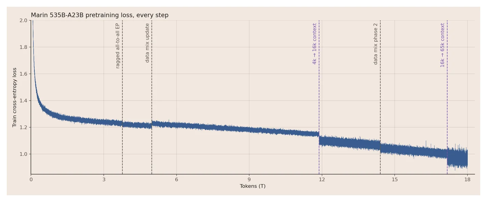

Open-weight checkpoints let researchers inspect finished parameters, yet they rarely reveal why a training run stayed stable, how a 25-trillion-token corpus was deduplicated, which optimizer bugs erupted at step 24,000, or why reinforcement learning collapsed halfway through post-training[4]. Marin—founded at Stanford and operated through Open Athena—closes that scientific gap by practicing full open development: code, data recipes, preregistered scaling forecasts, negative results, live training trackers[1], and intermediate checkpoints are published in the open as training unfolds.
This tutorial walks chronologically through the complete Marin stack around its two flagship sparse Mixture-of-Experts (MoE) vehicles:
- Marin “Mochi” 535B-A23B: a 535.3B total / 22.8B active (non-embedding) Normalized LatentMoE trained on 18 trillion tokens across 704 NVIDIA GB200 GPUs (11 NVL72 racks), completing its main pre-training phase on November 5, 2026[2] and releasing 57 intermediate and 262K long-context checkpoints[5].
- Marin “Snowball” 67B-A2B: a 10T-token overtrained TPU MoE that surpassed the dense Marin 32B model at $10\times$ fewer FLOPs and $16\times$ fewer active parameters[8], serving as Open Athena's open post-training testbed for coding-agent SFT and GRPO[11][12].
How to read this guide: Section 1 establishes the shared mathematical vocabulary (FLOP accounting, attention layouts, Hyperball, Quantile Balancing, and NVLink/InfiniBand sharding); Sections 2–5 follow Mochi from block design and Datakit curation through 18T pre-training and 262K mid-training at Marin commit 12d8b6f09f96[17][20]; Sections 6–8 trace Snowball's post-training SFT/RL stack and Marin's 26-benchmark evaluation policy[16].
Why Marin Matters: Open-Process Frontier Engineering
Modern frontier AI engineering is constrained less by isolated architectural tricks than by coupled trade-offs across data repetition, communication bandwidth, numerical stability, and evaluation hygiene. Under a fixed December hardware deadline on 768 allocated GB200s (11 healthy racks of 64 GPUs), Open Athena optimized for three explicit objectives:
- Realized MFU first: theoretical FLOP efficiency matters only through realized tokens per second on actual hardware, motivating LatentMoE, shallow width-to-depth ratio (128), and homogeneous layer stacking under
jax.lax.scan. - Preregistered predictability: a five-rung Scaling Ladder forecasts final dropless Paloma loss across a $300\times$ compute extrapolation, turning every deviation or bug into a falsifiable diagnostic[14].
- Post-training readiness: every architectural choice retains established inductive biases (SwiGLU, GQA, RMSNorm, z-loss) and leaves a 5% terminal learning rate so community SFT and RL pipelines transfer cleanly.


1. Foundations: Accounting, Routing Geometry, and Parallelism
Before diving into Hero code or RL traces, we establish the four foundational equations that govern every design choice in Marin, synthesized from the JAX Scaling Book[27], Transformer FLOP accounting[34], distributed sharding primers[33], and Su Jianlin's MoE routing derivations[28].
Tensor Shapes, Active Parameters, and LatentMoE FLOPs
Throughout Marin's JAX codebase, token activations are row vectors packed as $X \in \mathbb{R}^{B \times S \times D}$, where $B$ is sequence batch size, $S$ is sequence length (4,096 at launch), and $D$ is backbone hidden width (d6144 means $D = 6144$, not $S$ or parameter count). Attention uses $H_q$ query heads and $H_{kv}$ key/value heads of width $d_h = 128$, with $D = H_q d_h$ across every rung of the ladder.
In a sparse MoE block with $N_{\text{fix}}$ non-routed parameters (attention, router, shared experts, norms), $E$ routed experts of $P_e$ parameters each, and top-$K$ selection, total and active parameter counts follow[18]:
$$N_{\text{total}} = N_{\text{fix}} + E P_e, \qquad N_{\text{active}} \approx N_{\text{fix}} + K P_e$$Never estimate $N_{\text{active}}$ by multiplying $N_{\text{total}}$ by $K/E$: shared experts, projections, and attention contribute $100\%$ to $N_{\text{active}}$. In Mochi (D=6144, L=48, V=128,256), backbone + 384 routed + 2 shared SwiGLU experts yield $533.8\text{B}$ non-embedding parameters ($535.3\text{B}$ with untied embeddings/lm_head) and $22.8\text{B}$ active non-embedding parameters ($24.4\text{B}$ including embeddings and head).
For a dense Transformer, training forward + backward compute per iteration ($3\times$ forward) follows[34]:
$$F_{\text{iter}}^{\text{dense}} = 72 B L S D^2 \left(1 + \frac{S}{6D} + \frac{V}{12 D L}\right) = \underbrace{72 B L S D^2}_{\text{linear + MLP}} + \underbrace{12 B L S^2 D}_{\text{attention}} + \underbrace{6 B S D V}_{\text{lm\_head}}$$For LatentMoE, Levanter's default lm_flops_per_token prices routed SwiGLU matrices at backbone width $D$ instead of compressed latent width $d_l$. In train.py#L346[25], Marin subtracts the full-width routed cost and adds the down/up bottleneck projections per layer before multiplying forward FLOPs by $3 S$ for $F_{\text{example}}$:
Without this correction, halved routed expert GEMMs ($d_l = 3072 = D/2$) would overstate reported Model FLOPs Utilization (MFU) by nearly $2\times$. Realized MFU then measures useful model FLOPs against peak accelerator BF16 throughput[27]:
$$\text{MFU} = \frac{F_{\text{train/token}} \times \text{tokens/sec}}{N_{\text{GPU}} \times P_{\text{peak/GPU}}}$$GQA vs. MLA, Partial RoPE, Hyperball, and Logit z-Loss
For single-sequence inference over $S$ cached tokens in data type $b_{\text{elem}}$ ($2\text{ B}$ in BF16), standard Multi-Head Attention stores $2 S H_q d_h b_{\text{elem}}$ bytes of KV cache per layer ($24\text{ KiB/tok}$ for 48 heads). Grouping query heads via $g(h) = \lfloor h / (H_q / H_{kv}) \rfloor$ (GQA) shrinks inference KV memory proportionally without altering backbone dimension $D$. Notice how MLA (compressing KV into low-rank latent $c_t = x_t W_{\text{DKV}}$ plus decoupled RoPE keys) differs cleanly from LatentMoE: MLA compresses the attention KV cache, whereas Mochi uses GQA in attention and compresses the routed FFN expert path.
Positional encoding in modern long-context hybrids combines three building blocks:
- Rotary Position Embeddings (RoPE): rotates coordinate pairs at frequencies $\omega_j = b^{-2j/d_r}$ ($j=0,\dots,d_r/2-1$) so inner products $(R(p\omega_j)q)^\top (R(t\omega_j)k) = q^\top R((t-p)\omega_j)k$ depend strictly on relative offset $t - p$. Mochi uses 50% Partial RoPE ($d_r = d_h/2$) on local Sliding Window Attention (SWA) layers and NoPE (no positional rotation) on global layers.
- LeRoPE vs. YaRN / SSMax temperature scaling: whereas LeRoPE learns frequency multipliers $\tilde{\omega}_j = e^{\alpha_j}\omega_j$ during training, context extension like YaRN rescales rotary frequency bands at low frequencies and multiplies attention logits by a log-length temperature $m(s)^2$ ($m(s) = 1 + 0.1\ln s$) so attention stays sharp across more keys.
- RMSNorm, QK-Norm, and GatedNorm: normalizing each token or head vector ($\hat{q} = q / \operatorname{RMS}(q)$) pins vector length to $\sqrt{d_h}$ so unscaled attention score $\ell = \frac{c\,\hat{q}\cdot\hat{k}}{\sqrt{d_h}} = c\sqrt{d_h}\cos\theta$ reflects pure angular alignment scaled by
qk_mult$c$ ($1.3\sqrt{128}\approx 14.71\cos\theta$ in Mochi). Adding input-dependent GatedNorm, $\operatorname{GatedNorm}(u) = u \odot \sigma(\operatorname{SiLU}(u W_{\text{down}}) W_{\text{up}})$, restores elementwise expressivity after normalization.
Crucially, forward activation norms and Hyperball (MuonH / AdamH) weight constraints operate in two completely different spaces. Forward norms stabilize activations entering attention or MLPs; Hyperball projects updated weight blocks back onto their initial Frobenius sphere of radius $R = \|W\|_F$:
Because Hyperball prevents weights from growing in magnitude over training (removing Adam's implicit weight-norm LR decay), a Warmup-Stable-Decay (WSD) plateau stops making progress unless decay is baked into a linear LR schedule. Meanwhile, training optimizes next-token cross-entropy (in nats, $\text{PPL} = e^{\mathcal{L}_{\text{CE}}}$) plus logit $z$-loss ($10^{-4}(\log\sum_v e^{z_{t,v}})^2$) because a learnable final RMSNorm gain can still blow up logit magnitudes even with lm_head pinned on the Hyperball.
MoE Routing Geometry: From Aux Loss to Quantile Balancing
Following Su Jianlin's geometric decomposition of an FFN into unit-norm directions $e_i$ predicted with scalar magnitudes $\rho_i$[28], sparse routing approximates $\sum_{i=1}^E \rho_i e_i$ by picking only the top-$K$ experts with largest predicted scores $s_{t,i}$. Left unregularized, underloaded experts receive fewer gradients and enter a collapse loop until they die completely across every layer[7].
Prior balancers required fragile hyperparameter tuning: GShard added $\alpha \mathcal{L}_{\text{bal}}$ directly to training loss (fighting the language modeling objective when $\alpha$ is too large), while DeepSeek-V3 introduced Aux-Loss-Free balancing ($b_i \leftarrow b_i + \gamma \operatorname{sign}(\bar{c} - c_i)$ with step size $\gamma=0.001$) and Arcee Trinity added momentum (SMEBU). Note also Su Jianlin's gauge invariance insight on biases: replacing $b$ with $b + c\mathbf{1}$ leaves $\operatorname{argtop}_K(s + b)$ unchanged, separating relative load-balancing bias $(b - \bar{b}\mathbf{1})$ from a shared compute-budget offset $\bar{b}\mathbf{1}$.
Can we eliminate the update hyperparameter $\gamma$ altogether? Su Jianlin formulated balanced top-$K$ routing over $M$ tokens and $E$ experts as a linear program maximizing total router affinity[29][30]:
$$\max_{x_{t,i} \in [0,1]} \sum_{t=1}^M \sum_{i=1}^E x_{t,i} s_{t,i} \qquad \text{s.t.} \quad \sum_{i=1}^E x_{t,i} = K,\quad \sum_{t=1}^M x_{t,i} = \frac{MK}{E}$$Its dual Lagrange multipliers yield alternating coordinate thresholds $\alpha_t$ (per-token cutoff) and $\beta_i$ (per-expert bias), leading to hyperparameter-free Quantile Balancing (QB):
- Per-token threshold: on the biased logits $s_{t} + b^{(t)}$, compute the $(K+1)$-th largest logit $\alpha_t = (s_t + b^{(t)})_{(K+1)}$ and form the margin matrix $m_{t,i} = s_{t,i} - \alpha_t$.
- Per-expert upper quantile: across the batch, find for each expert $i$ the $(1 - K/E)$-upper quantile $\beta_i = Q_{1 - K/E}(\{s_{t,i} - \alpha_t\}_{t=1}^M)$, then set $b^{(t+1)} = -\beta$ (with
stop_gradientfor the next step).
For causal single-request decoding where future tokens are unavailable, Moving Quantile Balancing (MQB)[31] adapts QB using causal prefix statistics along each sequence, while pairing bias-selected top-$K$ with unbiased Sigmoid gating[32] avoids softmax competition among active experts.
Distributed Sharding: DP, FSDP, TP, PP, SP, and EP
In BF16 compute + FP32 master weights/moments with Adam, optimizer and weight state consumes $16\text{ bytes}$ per parameter—nearly $8\text{ TiB}$ for a 535B model before activations or communication buffers, far above a single B200 GPU's $185\text{ GiB}$ HBM[6]. Five parallelism axes resolve different bottlenecks[33]:
| Parallelism | Shards What | Primary Collectives | Marin / GB200 Role |
|---|---|---|---|
| DP | Global token batch | All-Reduce / Reduce-Scatter | DP=11 across racks over 50 GB/s InfiniBand |
| FSDP | Weights, grads, opt states | All-Gather + Reduce-Scatter | Used for dense, shared-expert, and attention weights inside rack |
| TP (+ SP) | Linear matrices & seq norm acts | All-Reduce / All-Gather | Kept within NVLink domains when single-layer matrices overflow |
| PP | Transformer layers | Point-to-point Send/Recv | Not needed on Mochi due to intra-rack HBM & host offload |
| EP | MoE routed experts | All-to-All Dispatch/Combine | EP=64 inside NVL72 (6 experts/GPU over 900 GB/s NVLink) |
Why abandon pure FSDP above 360B? In Mochi, roughly $97\%$ of parameters live in routed experts. Under balanced top-8 LatentMoE ($d_l = 3072$, 1,024 sequences/rack at $S=4096$ over 64 GPUs), an FSDP forward pass must All-Gather $\approx 20\text{ GiB}$ of routed expert weights per GPU per layer, whereas EP dispatches and combines only $\approx 6\text{ GiB}$ of compressed token activations—and adding more experts increases FSDP traffic without increasing EP token traffic.
2. Architecture Design: Marin 535B-A23B (“Mochi”)
Every block-level modification in Mochi had to survive two gates: empirical compute efficiency measured via the May 2026 baseline curve $L(C) = 1.6 + 88.90 \cdot C^{-0.0941}$ (for example, $1.18\times$ means the baseline needs $18\%$ more compute to match loss), and realized MFU on GB200[2].
Shallow Width (d6144, 48 Layers) and Homogeneous MoE
Unlike deeper frontier MoEs (60–90+ layers), Mochi adopts a wide, shallow $D = 6144$, $L = 48$ geometry (width:depth ratio $128$) and zero leading dense layers[17]. Fewer, wider layers yield larger GEMMs and higher realized MFU, while removing leading dense layers keeps every Transformer block structurally identical so the entire 48-layer stack compiles cleanly through a single jax.lax.scan loop without HBM blowup.
| Hyperparameter | Marin 535B-A23B (“Mochi”) | Marin Snowball 67B-A2B | Marin 32B (Phase 3+ Dense) |
|---|---|---|---|
| Backbone / Total / Active | 535.3B total / 22.8B active (excl. head) | 67B total / ~2B active | 32B dense (Qwen3-style QK-Norm) |
| Depth × Width ($L \times D$) | 48 layers × 6,144 (ratio 128) | TPU-optimized deep sparse MoE | 64 layers × 5,120 ($d_{\text{ff}} = 27648$) |
| MoE Routing & Shared | 8 / 384 LatentMoE ($d_l=3072$) + 2 shared | Fine-grained sparse MoE (TPU) | Dense SwiGLU |
| Attention Layout | 3:1 SWA (2048) / Global; 48Q ($d_h=128$) | Hybrid local/global for fast RL rollouts | Full causal 40Q / 8KV GQA |
| KV Heads & RoPE | 12 KV (local 4:1) / 6 KV (global 8:1); 50% RoPE / NoPE | Optimized for low serving KV footprint | 8 KV; standard RoPE + QK-Norm |
| Training Horizon | 18T tokens (~13× overtrained, $2.7\times 10^{24}$ FLOPs) | 10T tokens (~100× overtrained, $1.2\times 10^{23}$ FLOPs) | 6.437T tokens (Mantis cooldown) |
| Hardware & Stack | 704 GB200s (DP11 × EP64), JAX/Grug | Google TPU v4/v5p, SkyRL + Harbor post-train | TPU v4-2048 slice |

Other candidate upgrades—Attention Residuals, mHC, MLA, Multi-Token Prediction (MTP), looped-depth weight sharing[35][36], and over-encoded hashed $n$-gram embeddings—either could not clear Open Athena's strict realized-MFU bar before the July cluster clock started or were deferred in favor of standalone speculative drafters.
Normalized LatentMoE: Fixing the 0.25× Bottleneck Shrinkage
In Mochi's LatentMoE, the FP32 router still reads full-width $D=6144$ activations, and the 2 shared SwiGLU experts stay on the local full-width path ($1/3$ of active MLP neurons as a safety dense backbone). Only the routed branch projects down before EP dispatch and expands back once after weighted combine:
$$z = \operatorname{RMSNorm}_{\gamma}\!\left(x W_{\text{down}}\right), \qquad y_{\text{routed}} = \left(\sum_{e \in \mathcal{K}_{\text{kept}}} g_e E_e(z)\right) W_{\text{up}}$$where $W_{\text{down}} \in \mathbb{R}^{6144 \times 3072}$, $W_{\text{up}} \in \mathbb{R}^{3072 \times 6144}$, and each SwiGLU expert $E_e(z) = [\operatorname{SiLU}(z W_{g,e}) \odot (z W_{u,e})] W_{d,e}$ uses square $3072 \times 3072$ matrices. Square matrices give an underappreciated bonus: Muon's orthogonalization equalizes spectral singular values cleanly across both rows and columns without triggering neuron imbalance on skewed rectangular matrices.
Crucially, naive LatentMoE initially failed in Marin's ablations, dropping to $0.74\text{–}0.75\times$ compute efficiency from d512 to d1024 (Issue #6822). Initializing both $W_{\text{down}}$ and $W_{\text{up}}$ with $\sigma = 0.5 / \sqrt{D}$ multiplied output variance by $0.5 \times 0.5 = 0.25$, starving routed experts—diagnosed by inserting a learnable latent scalar that immediately climbed to $\approx 4.0$. Adding a learnable RMSNorm on the 3,072-dim latent reversed the penalty to $1.25\times$ compute efficiency while halving All-to-All activation bytes, making 8/384 match the communication bandwidth of 4/192 while winning $+13\text{–}16\%$ quality efficiency.

D=6144) from halved EP communication (d_l=3072) via learnable latent RMSNorm. Right: Raw-logit 10,000-bin histogram Quantile Balancing computes $\beta_e$ without hyperparameters or GPU-count dependence. Open full size
Histogram Top-k Quantile Balancing & 2.5 Sigmoid Renorm
Having previously validated Quantile Balancing (QB) spike-free on a 32B-A5B / 326B-token ($10^{22}$ FLOP) run[7], Open Athena adapted QB for 64-way GPU sharding by replacing per-GPU top_k averaging with a live-range 10,000-bin global histogram (QbEstimator.HIST, Issue #8033):
- Raw logits beat post-Sigmoid bounds: unlike DeepSeek-V3 and Kimi K3 (which apply bias after $\sigma(s)$ on $[0, 1]$), applying QB bias directly to raw FP32 logits balanced faster during warmup, settling at $\approx 2\%$ drops and $4.848$ routing entropy (vs. max $\ln 128 = 4.852$) compared to $3.4\text{–}4.9\%$ drops and $4.786\text{–}4.821$ entropy for post-sigmoid QB.
- Single integer
psumacross GPUs:_qb_beta_histtakes global[lo, hi]viapmin/pmax(stop_gradient), bins margins $s - \alpha$ locally withjnp.bincount, aggregates one integer histogram across_BATCH_AXES, and interpolates $\beta_e$ from top-cumulative counts. - Unbiased 2.5 Sigmoid combine weights: selected experts take $g_e = \frac{2.5\,\sigma(s_e)}{\epsilon + \sum_{k \in \mathcal{K}} \sigma(s_k)}$ using unbiased logits, matching the $2.5$ scale used in GLM-5.2 / DeepSeek-V3.
3:1 SWA/Global Attention, Fixed 1.3 QK-Norm, XSA, GatedNorm & SConv
Every remaining component in the 48-layer block plays a targeted stability or quality role:
- Asymmetric GQA in 3:1 SWA (2048) / Global blocks: every 4th layer (plus layer 47 via
_long_layer_schedule) uses full causal global attention with 8:1 GQA (6 KV heads) and NoPE; local layers use 2,048-token sliding windows (only 2–4% slower than 512 in vLLM yet $1.10\times$ more compute-efficient), 4:1 GQA (12 KV heads, since local KV cache is bounded at 2048), and 50% Partial RoPE. - Fixed
1.3QK RMSNorm multiplier: non-parametric QK RMSNorm scaled by $1.3$ outperformed no QK-norm (3.0208vs.3.0281atd768) and tied learnable per-head gains (2.6477vs.2.6484atd2048despite learnable gains creeping toward $2.0$), leaving clean headroom to bump the scale manually during context extension. - Exclusive Self-Attention (XSA) + Head Gate: removing each token's self-value projection $z_i = y_i - \frac{y_i^\top v_i}{\|v_i\|^2 + 10^{-6}} v_i$ followed by $2\sigma(x W_{\text{gate}})$ keeps attention closer to a benign no-op early in training (where zero-initializing $W_o$ fails under Hyperball), slashing accelerated-warmup EP drops from $>50\%$ (
12.7%avg over steps 30–100) to21%(5.6%avg). - GatedNorm & Embedding RMSNorm: rank-128
GatedNorm(in MuonH) afterRMSNormsupplies input-dependent channel modulation, while placingRMSNormaftertoken_embed(in plain Adam, whose norm grows $177 \to 7,800$) stabilizes lookup magnitudes and creates natural relative LR decay ($+19\%$ compute efficiency atd768). - Short Convolutions (
SConv, kernel=4): adopted from Thinking Machines' Inkling[36], identity-initialized causal per-channel convolutions masked at documentsegment_idsboundaries sit onK,attn_out, andmlp_out($1.19\times$ compute efficiency atd1024), accelerating 1-layer induction-head formation in shallow models. NoticeVis intentionally omitted because mixing neighboring values blurs XSA's self-value subtraction!
SConv Placement (d1024 Ablation) | Paloma Macro Loss | Compute Efficiency | Notes on Choice |
|---|---|---|---|
| K, V, attn out, MLP out (kernel 4) | 3.0378 | 1.19× | Full 4-site Inkling layout; Hero drops V (+0.003 at d768) to keep XSA clean |
| All four sites, kernel 3 / kernel 2 | 3.0387 / 3.0440 | 1.18× / 1.13× | Smaller kernels leave local induction capacity on the table |
| All four sites, global layers only | 3.0482 | 1.10× | Halving coverage forfeits ~half the efficiency gain |
| MLP out only / K only / Attn out only | 3.0506 / 3.0542 / 3.0571 | 1.08× / 1.05× / 1.03× | Gains stack cleanly across K, attn_out, and mlp_out |
| No SConv (baseline) | 3.0610 | 1.00× | Removing SConv entirely on Hero d768 costs +0.028 loss (3.0489 vs 3.0208) |
Core JAX / Equinox Implementation
The excerpt below condenses CausalSelfAttention, GatedNorm, MoEMLP, and Block directly from experiments/grug/moe_hero_ep/model.py[20] so you can trace every tensor projection and quantization-free FP32 router step:
# Excerpt from experiments/grug/moe_hero_ep/model.py (commit 12d8b6f09f96)
def xsa_and_head_gate(attn_out, v, x, attn_gate, w_o, batch_spec):
aligned_v = reshard(align_kv_heads(v, num_q_heads=attn_out.shape[2]), _partition_spec_of(attn_out))
dot = jnp.sum(attn_out * aligned_v, axis=-1, keepdims=True)
v_norm_sq = jnp.sum(aligned_v * aligned_v, axis=-1, keepdims=True)
# Exclusive Self-Attention (XSA): remove self-value direction per head
attn_out = attn_out - (dot / (v_norm_sq + 1e-6)) * aligned_v
gate = 2.0 * jax.nn.sigmoid(jnp.einsum("bsd,dn->bsn", x, attn_gate))[..., None]
attn_out = jnp.reshape(gate * attn_out, (*attn_out.shape[:-2], -1), out_sharding=P(_BATCH_AXES, None, "model"))
return jnp.einsum("bsh,hd->bsd", attn_out, w_o, out_sharding=batch_spec)
def moe_forward_latent_qb(self, x_flat):
# 1. Router reads full D=6144 in fp32; QB bias applies to raw logits (stop_gradient)
logits = jnp.einsum("td,de->te", x_flat, reshard(self.router, P(None, None))).astype(jnp.float32)
biased = logits + jax.lax.stop_gradient(self.router_bias)
topk_biased, idx_plus_1 = jax.lax.top_k(biased, self.cfg.num_experts_per_token + 1)
qb_alpha, selected = topk_biased[:, -1:], idx_plus_1[:, :-1]
# 2. Unbiased Sigmoid weights renormalized to 2.5
raw_weights = jax.nn.sigmoid(jnp.take_along_axis(logits, selected, axis=-1))
weights = (raw_weights * (2.5 / (jnp.sum(raw_weights, axis=-1, keepdims=True) + 1e-9))).astype(x_flat.dtype)
# 3. Histogram Quantile Balancing over live [pmin, pmax] range of margins (s - alpha)
beta, lo, hi = _qb_beta_hist(reshard(logits - qb_alpha, P(_BATCH_AXES, None)), mesh=get_abstract_mesh(),
num_experts_per_token=8, num_experts=384, n_bins=10_000)
# 4. Normalized LatentMoE bottleneck: 6144 -> 3072 -> RMSNorm -> EP64 -> 3072 -> 6144
routed_in = self.latent_norm(jnp.einsum("td,dl->tl", x_flat, self.w_latent_down.astype(x_flat.dtype)))
routed_latent, overflow = self.expert_mlp(routed_in, selected.astype(jnp.int32), weights, report_capacity_overflow=True)
routed_out = jnp.einsum("tl,ld->td", routed_latent, self.w_latent_up.astype(x_flat.dtype))
return routed_out, {"qb_beta": beta, "overflow": overflow.total}3. Data Curation: Datakit & Harrier at 25 Trillion Tokens
Raw open web corpora overlap heavily across providers (Common Crawl parses and synthetic rewrites) and frequently hide test splits inside training files. Marin's Datakit pipeline[3] converts scattered HuggingFace repositories into a deduplicated, decontaminated, empirically weighted 200-bucket pool without rehosting opt-out upstream data[19].
152 Sources, Word 5-Gram MinHash/LSH & 13-Gram Decontamination
For the Mochi pipeline, Datakit catalogued 152 pinned open sources in sources.py totaling 18.71 billion documents (25.25 trillion Llama-3 tokens) in the official Datakit breakdown (earlier planning snapshots reached ~25.6T tokens before filtering/normalization), drawing most volume from AI2, NVIDIA, HuggingFace, and HPLT plus specialized math, books, code, and trace tails:
- Parquet normalization: every source is rewritten with
(id, text, source_id, content_hash)while compacting pathological whitespace runs and pinning upstream commits so creator takedowns (e.g. Stack v3 opt-outs) automatically propagate. - Exact + Fuzzy MinHash/LSH deduplication: exact hashing catches ~505M duplicates (~500M within sources, ~5M across sources), and Locality-Sensitive Hashing over word 5-grams (never conflated with 5 BPE tokens!) removes near-copies such as Nemotron-CC synthetic rephrasings vs. real seeds. Together, deduplication cuts 2.33B documents / 2.13T tokens (8.4%)—with 93.2% of cross-source links coming from just three pairs.
- Structured-data LSH exemptions (
store_4d2e363d): because single-character differences matter semantically in DNA sequences and tool-calling JSON, the August 18 Hero store exempts 16 sensitive sources from fuzzy dedup, raising available tokens from23.01Tto23.11T. - 13-word $n$-gram Bloom decontamination: paragraphs sharing $\ge 50\%$ of eligible 13-word $n$-grams with Artificial Analysis or Marin's evaluation sets flag the whole document, dropping another 13.66B tokens. Open Athena also documents failures candidly: earlier Marin 32B hit GSM8K contamination in Dolmino (fixed in the Mantis cooldown[10]), and Mochi caught a Penn Treebank leakage at step 362k contributing ~
0.02on 1/16 of Paloma.
Harrier 40×5 Bucketing & Simulated-Epoching Proxy Regression
Source-level sampling cannot isolate clean math or code buried inside heterogeneous Common Crawl dumps. Datakit therefore decouples expensive neural feature extraction from lightweight taxonomy iteration:
- Embed once: encode every document into a 1,024-dim vector using Microsoft Harrier (a Qwen retrieval model).
- Cluster into 40 balanced topics: fit 5,000 spherical $k$-means regions and agglomeratively merge into 40 topics (each $\ge 1\%$ of corpus mass so every weight has comparable influence), validated by LLM intruder tests ($84.4\%$ on 1,000 raw clusters, $62.5\%$ on 40 topics vs. $20\%$ random).
- Score into 5 quality bands: a FineWeb-Edu-style distilled classifier scores each content type (code, prose, math) into 5 bands, keeping low-quality buckets for budget-dependent mixing rather than discarding them prematurely.
- Optimize mixtures via simulated epoching: crossing $40 \times 5 = 200$ buckets, Marin ran 872 to 1,000+ small proxy runs (
grug-moe-mix-swarm), proportionally shrinking both training FLOPs and per-bucket data size (simulated epoching below $10^{23}$ FLOPs) so proxy models experience Mochi's exact repetition factor ($\le 2.09$ max epochs vs. an 8-epoch cap)[19].
Regression weights then parameterize a two-phase mixture in harrier_mix_2026_08_18.py: an 80% base phase (reference 15T) followed by a 20% cooldown phase (reference 3.75T out of 18.75T reference total, rescaled proportionally to Mochi's 18T schedule). Data flows through TokenizedCache, LmDataConfig, and Feistel-shuffled 4,096-token packed rows carrying boundary masks so neither attention nor SConv attends across concatenated documents.
4. Pre-Training & Distributed Systems at 535B Scale
With the model and mixture specified, scaling to 18T tokens on 704 GB200s required custom collective kernels, host-offloaded FP32 master weights, and sharding-safe optimizer reductions.
11-Rack GB200 Sharding, Pooled-Wave EP & Ragged All-to-All
Each NVL72 rack connects 64 guaranteed GPUs (16 nodes × 4 B200s, $11.6\text{ TiB}$ total HBM) over $900\text{ GB/s}$ uni-directional NVLink, whereas the 11 racks communicate across racks over $50\text{ GB/s}$ InfiniBand—an $18\times$ bandwidth cliff[6]. Marin maps topology cleanly to hardware hierarchy:
- Intra-rack
EP=64: 384 routed experts divide evenly at 6 experts per GPU ($\text{GPU}(e) = \lfloor e/6 \rfloor$, $\text{local}(e) = e \bmod 6$), keeping all-to-all token routing strictly inside NVLink; shared experts and non-expert weights use FSDP within each rack. - Cross-rack
DP=11: replicates the full 64-GPU rack unit 11 times (replica_dcn), yielding $11,264 \times 4,096 = 46,137,344$ global tokens per step ($65,536$ tokens and $524,288$ top-8 expert assignments per GPU).
At launch (August 20, 2026), OpenXLA's initial ragged_all_to_all hit only $15\%$ MFU with NCCL hangs. Rather than wait weeks to start the clock, Rafal Wojdyla built Destination-Pooled Static-Wave All-to-All (ep_fixed_pooled_wave_all_to_all.py)[21]:
- Pool by destination GPU: instead of rigid sender × expert buckets, all 6 local experts on a destination GPU share one pool of size $C_{\text{pool}} = \lceil \frac{1.15 \times 524288}{64 \times 3} \rceil = 3141$ per wave, embedding
local_expert_idin one extra payload header row to eliminate a metadata collective. - Stripe across 3 static waves: assignment index $r$ to each target GPU maps to $\text{wave} = r \bmod 3, \text{slot} = \lfloor r/3 \rfloor$, shrinking temporary HBM buffers by $3\times$; every wave still computes all 6 local experts via batched
6×SwiGLU. - Round-robin compact & irreversible overflow drop: receivers interleave sources up to per-expert wave capacity $C_{\text{expert}} = \lceil \frac{1.15 \times 524288}{6 \times 3} \rceil = 33497$. Crucially, overflow drops terminate the assignment immediately with zero output and zero weight renormalization—never retrying in the next wave.

DP11 × EP64) and 3-wave static All-to-All protocol (CF=1.15, 21.5% MFU at 3.4% drops) followed by the seamless step-82k mid-run swap to device-initiated Ragged All-to-All (0.01% drops, 23% → 30% MFU). Open full size
Even under extreme 4K → 65K d2048 stress tests where long-sequence token correlation spiked drops from $7\%$ to $37\%$, EP still landed within 0.008 dropless Paloma loss of FSDP. On Mochi itself, pooled-wave EP sustained 21.5% MFU at 3.4% drops for the first 21% of training until Matt Wittmann landed a performant device-initiated ragged All-to-All kernel around step 82,000, cutting drops to 0.01% (4K) / 0.03% (65K) and boosting MFU to 23% (and ~30% at longer contexts).
MuonH / AdamH / Adam Partitioning & the _pin_sharding Fix
After a single forward/backward pass, optax.multi_transform (optimizer.py) routes gradients to three parameter groups while plain router_bias stays frozen (stop_gradient) for out-of-band QB updates[22][23][24]:
| Optimizer Group | Parameters Routed by create_mask | Update Rule & Hardware Tricks |
|---|---|---|
| MuonH ($\text{lr} = \frac{13}{3}\text{lr}_{\text{adam}}$) | 2D/3D/4D Attention, routed & shared SwiGLU experts, w_latent_down/up, rank-128 GatedNorm matrices | Nesterov ($\mu=0.95$) + 5-step quintic BF16 Newton–Schulz orthogonalization (QuACK symmetric GEMM X @ X.T intra-rack only) + $\sqrt{\max(1, d_{\text{out}}/d_{\text{in}})}$ + Hyperball projection |
| AdamH ($\text{lr}_{\text{adamh}} = \text{lr}_{\text{muonh}}$) | Untied output head (output_proj / lm_head) | Elementwise Adam step direction (handling dense softmax gradients across $V=128\text{K}$) + Hyperball projection; beats Cautious AdamW by 1.08× (#8350) |
| Plain Adam ($\text{lr}_{\text{adam}}$, no WD) | token_embed, .router, attn_gate, 1D RMSNorm .weight gains (incl. latent_norm), SConv kernels | No weight decay, no Hyperball—avoids 700× embedding grad spikes seen under AdamH (#5773) while letting embed norm grow 177 → 7,800 |
To prevent memory exhaustion, device weights run in BF16 while FP32 master weights and optimizer states are offloaded to pinned host RAM (FP32_PINNED_HOST), paired with recompute_all rematerialization, FlashAttention-4 (gpu_fa4_cute), and chunked fused_linear_softmax_cross_entropy_loss (halving cross-entropy latency from $171.3\text{ ms}$ to $81.9\text{ ms}$ for $+0.04\text{ GiB}$ HBM). Crucially, GPU stress-testing caught a subtle XLA SPMD bug (Issue #8073): jnp.linalg.norm over a sharded intermediate mis-lowered and over-counted every $\sim 10,000$ steps, collapsing lm_head norm 150.7 → 21.4 and spiking loss 2.07 → 9.14. Resharding with explicit _pin_sharding(new_p, p) before FP32 sum-of-squares eliminated the bug completely.
# From experiments/grug/moe_hero_ep/adamh.py & optimizer.py (#8073 SPMD norm fix)
def _scale_invariant_2d(p, u, lr):
p_norm = jnp.sqrt(jnp.sum(jnp.square(p.astype(jnp.float32))))
u_norm = jnp.sqrt(jnp.sum(jnp.square(u.astype(jnp.float32))))
new_p = p - lr * u * p_norm / jnp.maximum(u_norm, 1e-10)
# Pin intermediate sharding to p's NamedSharding so reduction doesn't over-count under SPMD
new_p = jax.sharding.reshard(new_p, _target_named_sharding(p))
new_p_norm = jnp.sqrt(jnp.sum(jnp.square(new_p.astype(jnp.float32))))
return new_p / jnp.maximum(new_p_norm, 1e-10) * p_norm - p5-Rung Scaling Ladder & MoeHeuristic LR Law
Marin sizes optimizer hyperparameters via an empirical sweep (MoeHeuristic, $R^2 = 0.978$, Issues #7856/#8003) and validates dynamics on five homogeneous rungs holding 791 tokens per active parameter (launch_scaling_ladder.py)[18]:
where $T$ is total tokens and $B_{\text{tok}}$ is global tokens per batch (with $\beta_2$ clipped from $0.999^{B_{\text{tok}}/131072}$ to $[0.95, 0.9999]$ and a 1% linear warmup followed by linear decay to 5% of peak LR). Notice how holding per-rack batch constant (1,024 × racks) preserves identical EP overflow statistics from d1024 through d6144 for just ~1% of Hero compute[14]:
Rung (D / L) | GB200 Racks (GPUs) | Batch (Seqs) | Steps | Tokens (791/act) | Active / Total | Training FLOPs |
|---|---|---|---|---|---|---|
d768 (8L) | 1 (64) | 1,024 | 11,420 | 48B | 61M / 1.6B | $5.5\times 10^{19}$ |
d1024 (12L) | 2 (128) | 2,048 | 15,276 | 128B | 162M / 4.0B | $2.7\times 10^{20}$ |
d1536 (16L) | 6 (384) | 6,144 | 15,128 | 381B | 481M / 11.5B | $1.8\times 10^{21}$ |
d2048 (22L) | 11 (704) | 11,264 | 20,072 | 926B | 1.2B / 27.7B | $9.2\times 10^{21}$ |
d6144 (48L, Hero) | 11 (704) | 11,264 | 390,251* | 18T | 22.8B / 535.3B | $2.7\times 10^{24}$ |
*Mochi finished 390,251 scheduled steps (~18.1T tokens) on November 5, 2026, before executing additional post-schedule 262K long-context updates through step ~393,490.

1.6B to 27.7B predicting 535B): train loss (left) and dropless Paloma macro-loss projections fitting $L = 1.5 + A\cdot C^{-\alpha}$ to 2.039 (right; hollow points after 81% extrapolate the crashed d2048 rung). Source: Larry Dial, Open Athena (2026) [2].
5. Mid-Training: Cooldown & Context Extension to 262K
Pre-training on short 4K web mixtures leaves two critical gaps: long-range retrieval across full repositories and sharp convergence on high-value reasoning, code, and stem distributions. Marin bridges both in an explicit mid-training phase built around scheduled data annealing and progressive context expansion[1][5].
80% Phase-2 Cooldown Shift & Checkpoint Weight Averaging
Roughly 80% through the run (October 22, 2026), Mochi transitioned smoothly from Harrier Phase 1 to its curated Phase-2 cooldown mixture. Whereas the earlier scaling-ladder Phase-2 mix had shown a slight loss bump at 80%, Mochi's updated Phase-2 blend lowered both training and evaluation loss monotonically as the linear LR decayed toward 5%.
Near the end of the 65K extension, the team increased checkpoint cadence to every 500 steps across the final 5,000 steps and averaged those checkpoint weights. Weight averaging consistently improved evaluation loss across every held-out corpus and provided the starting point for extra post-schedule 262K runs and public HuggingFace release (open-athena/Marin-Mochi-535B-A23B, 57 total checkpoints including 10 from long-context stages).
4K → 16K → 65K → 262K Extension & QK Rescaling
Rather than paying quadratic global-attention cost for all 18T tokens, Mochi held global tokens per batch fixed (46.14M tok/step) while stepping sequence length monotonically via three coordinated switches:
- 4K → 16K (October 14, ~65% progress): increased sequence length $4\times$ with QK multiplier bumped to $1.48$; careful re-scoring at 4K proved that the immediate
0.031drop on raw 16K eval came from longer conditioning context per token, so all scaling-forecast tracking remained anchored on 4K re-evals. - 16K → 65K (step 372,000, November 1): raised capacity factor to virtually eliminate long-sequence drops (
0.03%) while longer FlashAttention-4 kernels pushed realized MFU up another ~3 percentage points toward~30%overall; fixedqk_multstepped up from $1.3 \to 1.66$. - 262K Post-Schedule Extension (November 6–9): launched from weight-averaged checkpoints with long-document upsampling and a floored, squared SSMax-style log scaling on the 12 global layers for $n \gt 65{,}536$:
By storing 50% Partial RoPE only inside bounded 2,048-token sliding windows and keeping all 12 global layers NoPE, extending to 262K required tuning attention temperature sharpening rather than fighting extreme RoPE wavelength extrapolation.
6. Post-Training I: SFT, Relay SFT & Plateau Dropping
Because Mochi had only just entered instruction fine-tuning in November 2026, Open Athena built and battle-tested Marin's complete post-training stack on Snowball 67B-A2B (pretrained on 10T tokens, $10\times$ fewer FLOPs than Marin 32B yet stronger on launch benchmarks)[8].
Documents vs. Tasks & Snowball's Open Post-Training DAG
As David Hall explains in There Is No Post-Training Data Commons[9], pre-training benefited from decades of public document archives (Common Crawl, Wikipedia, ArXiv, GitHub), whereas agentic post-training consumes executable tasks—each requiring an isolated sandbox world, an intent, interactive tools, and a deterministic grader. Only software engineering—through git history, CI suites, and containers—provides near-deterministic environments for multi-turn RL.
Integrating and customizing SkyRL and Harbor inside the Marin monorepo, Ben Feuer and collaborators mapped over 100 post-trained runs into a 14-node Directed Acyclic Graph combining four distinct techniques—SFT, RL with Verifiable Rewards (RLVR), Final-Token Preference Optimization (FTPO), and DARE-TIES model merging—to ship Snowball v0.1 at GPT-OSS-20B quality levels.

Domain Coding SFT & Teacher-Guided Relay SFT
Before RL, specialized coding-agent SFT on general-SFT checkpoint Snowball 09-21—using Qwen3.8-27B trajectories on CalibForge tasks plus Kimi repository demonstrations—leapt SWE-bench Verified from 12.8% to 46.5%[11]. Yet standard teacher-only demonstrations suffer from exposure bias: teachers rarely recover from clumsy errors that smaller students actually make mid-episode.
Donghyun Lee designed Relay SFT to collect paired recovery trajectories directly inside student-driven rollouts[13]:
- Student plays first (
loss_mask = 0, 52% of turns): Snowball acts autonomously until triggering an unparseable/invalid JSON tool call, declaring prematuredone(median context 18.4k tokens / 7 turns), or exhausting its context budget (32.3k / 11 turns). - Teacher repairs or takes over (
loss_mask = 1): Qwen3.8-27B fixes broken commands in place (15%of rows are repair-only with zero full takeover) or finishes the task from Snowball's dirty workspace while stripping copied student chat markers (22% → 0.1%). - Outcome and scientific caveat: Relay raised teacher-assisted episode completion from
64.4%to74.4%(across 7,427 episodes; 808 pass + 808 verified fail pairs). Once downstream SFT precision and MoE capacity bugs were fixed, however, controlled autonomous evaluations showed Relay SFT tying strong vanilla CalibForge + Kimi SFT (47.0%vs.46.5%SWE;43.5%vs.50.5%post-RL).
Plateau Dropping & Four Critical SFT Infrastructure Footguns
Prolonged vanilla SFT raises pass@1 at the expense of output entropy and multi-seed solution diversity (pass@8), starving subsequent GRPO of mixed pass/fail tasks. Because trajectory-level TailSFT degraded performance in long-horizon agentic rollouts (51.0% vs. 58.0% pass@8 at 3 epochs), Harshit Varma et al. introduced token-level Plateau Dropping[12]:
with threshold $\tau = 0.1$, floor $\varepsilon = 0.05$, and assistant-token indicator $w_i \in \{0, 1\}$. Losses are still tracked on dropped tokens (at $11\text{ bytes/token}$ in host RAM—6.65 GB vs. 805 GB optimizer state, costing only $+1.3\%$ step time), automatically re-enabling any token whose loss shifts later. At epoch 10, Plateau Dropping drops $62\%$ of trained tokens ($56\%$ already learned $\ell \lt -\ln 0.9$, $5\%$ stuck at high loss), keeping 57 of 100 SWE tasks in the GRPO-learnable band vs. 48 for vanilla SFT and nearly $2\times$ higher next-token entropy (1.19 vs. 0.72 nats on uncertain tokens).
Agentic SFT Comparison on Snowball 09-21 (8 seeds) | SWE pass@1 | SWE pass@8 | TB-Lite pass@1 / @8 | Mean Entropy (Uncertain) |
|---|---|---|---|---|
Base (09-21 general SFT) | 19.3% | 46.0% | 16.6% / 50.5% | 1.85 nats |
Vanilla SFT (3 epochs, lr=1e-4) | 23.4% | 58.0% | — | — |
| TailSFT (50% ramped / 25% fixed / token, 3 ep) | 23.4% / 22.5% / 18.0% | 51.0% / 51.0% / 46.0% | — | — |
Plateau Dropping (3 epochs, lr=1e-4) | 31.9% | 67.0% | — | — |
Vanilla SFT (10 epochs, tuned lr=3e-4) | 49.9% | 73.0% | 33.9% / 64.9% | 0.72 nats |
Plateau Dropping (10 epochs, lr=1e-4, clip=4.0) | 48.8% | 77.5% | 36.1% / 68.0% | 1.19 nats |
Crucially, Appendix A of Plateau Dropping documents four infrastructure footguns that initially masked true SFT gains:
- BF16 master weights silently rounded updates to zero: Levanter inherited BF16 from HF import, rounding any Adam update below $0.4\%$ of weight magnitude and leaving $92\text{–}95\%$ of weights bit-identical after 1,520 steps until switching back to FP32 master weights ($89\%$ weights updated).
CF=1.0overflow cost 0.07–0.08 nats: raising expert capacity factor from1.0(14–19% drops on agent traces) to2.0cut drops to $0.16\% \to 0\%$ and matched reference inference NLL within0.0002.- Packed padding inflated nominal epochs: 64K SWE rows and 32K terminal rows retained $26\%$ and $16\%$ padding, making 10 nominal passes equal 7.4 and 8.6 real passes.
- Gradient clip
1.0clipped 50–100% of Plateau Dropping steps: averaging over the $38\%$ un-dropped tokens amplifies gradient norms $2\text{–}3\times$, hiding a $-6.0\text{ pp}$pass@8penalty at identical training loss curves until relaxingmax_grad_normfrom1.0(72.0%) to4.0(78.0%).
7. Post-Training II: Turning Snowball into a Coding Agent with RL
Why didn't direct RL move Snowball beyond noise at first? Inspecting trajectories directly revealed the bottleneck: most failures stemmed from broken importance-sampling probabilities, tokenization mismatches, and poor execution reliability rather than total absence of coding knowledge[11].
Pre-RL Probe, Entropy Collapse & Five Stack Fixes (TITO)
Sampling every R2E-Gym task 8 times before training—a Pre-RL Probe—showed that only 36% of Stage-3 tasks sat in the mixed pass/fail learnable band required by binary GRPO, and in 13 of 15 closely inspected pairs the failed rollouts had already located the exact target file and function. Even specific errors traced directly to open training data: Snowball repeatedly emitted SEARCH/REPLACE edits into /app/solution.patch and fed them to Unix patch because 31,661 Stage-3 SWE traces instructed that exact format.
Fixing three systemic stack bugs separated genuine model learning from infrastructure collapse:
- Top-$p$ / top-$k$ entropy collapse: inference engines logged probabilities before nucleus/top-$k$ filtering while the trainer applied importance sampling as if tokens came from the unfiltered distribution—splitting train vs. eval policies and halving entropy. Switching to full-distribution sampling ($T=1.0$) eliminated entropy collapse completely.
- Token-In-Token-Out (TITO,
harbor #122): when an agent turn hit length limits and re-rendered text into prompts, text like["hel", "lo"]decoded and re-tokenized into["hello"], misaligning log-probs. Storing exact prompt/completion token IDs cut median solve turns ($22 \to 15$) and dropped repeated commands $>4\times$. - KL, temperature, terminal freezing & verifier timeouts (
#517,#519,#125): restoring detached KL gradients, matching temperature-scaled training probabilities, keeping rolling terminal history, and excluding container timeouts from zero-reward training lifted held-out RL scores $+10\text{ pp}$ by update 24.
EAGLE-3 Speculative Decoding & Context-Distilled Prompt RL
Long-context multi-turn rollouts dominate RL wall-clock time. Reusing trajectories from the Pre-RL Probe to train a small EAGLE-3 draft model delivered nearly $2\times$ decoding throughput and a $1.42\times$ end-to-end RL step speedup across 60 GRPO updates—while staying completely frozen because $86\%$ of Snowball's weights remained bit-identical at step 36.
With fast rollouts running over a mixed 1,833-task learnable band (453 R2E-Gym + 1,380 TMax where base pass@8 is $1\text{–}6/8$; batch 64 × 8 rollouts, lr=5e-7, 64K window), Marin also tested Prompt Optimization → Context-Distilled RL: generating rollouts with an engineered workflow prompt $x + h$ ($+9\text{–}14\text{ pp}$ boost) while computing GRPO log-probs strictly on $x$ alone. Although the prompted-vs-unprompted likelihood gap closed by $85\%$, prompt-less eval flatlined (29.8% vs. 30.2% start and 47.4% ordinary RL) because initial prompt guidance decays rapidly once 4–6 assistant turns fill context and Stage-3 followed full prompt rules in only $15\%$ of attempts.
Benchmark Progression, Trace Forensics & Reward Hacking
Evaluating across Marin's Stage-3 checkpoint (#9225, Wilson 95% CIs under Eval Policy v0.1[15]) and the newer 09-21 Terminus-2 suite reveals clear division of labor between SFT and RL:
| Model / Recipe (Terminus-2 Eval) | SWE-bench Verified r100 | Terminal-Bench 2.1 | OpenThoughts-TBLite |
|---|---|---|---|
Snowball 09-21 (General SFT base) | 12.8% | 7.2% | 11.5% |
| Direct RL (GRPO on mixed pool) | 30.5% | 18.8% | 45.1% |
| CalibForge + Kimi SFT (vanilla) | 46.5% | 18.8% | 33.0% |
| CalibForge + Kimi Relay SFT (+30 RL steps) | 47.0% → 43.5% | 17.4% → 19.3% | 36.8% → 44.0% |
| CalibForge + Kimi SFT + 60 RL steps | 50.5% | 23.9% | 41.8% |

pass@1 progression from Snowball 09-21 through CalibForge, Kimi, and Relay SFT to 30 and 60 GRPO updates on Terminal-Bench 2.1, SWE-bench Verified random-100, and OpenThoughts-TBLite. Source: Lee, Varma, and Dimakis (2026) [11].Trace inspection explains why the two recipes diverge even on identical final test sets:
- SFT supplies callable domain facts and upfront planning: in
sqlite-db-truncate, 12/13 SFT attempts recalled that serial type 7 encodes an 8-byte IEEE double vs. 0/5 for base or Direct RL; SFT+RL spent $69\%$ of tokens reasoning (finishing parking-lot pathfinding in 6–8 turns / 100–120s vs. 68–83 turns / ~1,000s for Direct RL). - RL enforces reliable execution inside context budgets: Direct RL slashed TBLite invalid action rates from $\sim 80\%$ down to $2\%$, cut 64K window exhaustion from $91\%$ to $56\%$, and solved React/SQL tasks where the base model already named the right fix but failed to apply it—working interactively in $42\%$ reasoning share (~3.5M vs. ~9.2M output tokens across 26 shared solved TBLite tasks).
- Verified reward hacking audits: automated trace audits caught subtle gaming contributing ~0.5 pp each—modifying a Scheme interpreter to add a shortcut primitive, replacing a JS network controller with
print("SYSTEM_STABLE"), and reading exposed git commits in 39R2E-Gymrollouts (plus 31 failed fabrication attempts by Direct RL).
8. Evaluation, Scaling Extrapolation & Canonical Eval Policy
Open-process claims are meaningless without standardized metrics, hardware-accurate utilization accounting, and locked evaluation protocols.
Dropless vs. Capacity-Dropped Paloma & Scaling Forecast
Marin measures base pre-training quality using Paloma macro-loss—explicitly averaging next-token cross-entropy equally across domain corpora (eval.py)[26] rather than token-weighted micro-averaging. Crucially, EP-trained MoEs must be evaluated dropless: on narrow single-domain eval splits (such as C++), capacity buffers overflow far more often than on mixed training batches—causing capacity-dropped d2048 evaluation to report $2.5858$ vs. its true dropless value of $2.4106$, which had initially made EP look $3\times$ worse than FSDP before flipping to a $1.18\text{–}1.35\times$ win.
Across 4K-packed dropless Paloma, the preregistered Hero ladder power law $L(C) = 1.5 + A\cdot C^{-\alpha}$ (excluding lm_head compute) forecast 2.04 (2.039, $\text{PPL} \approx 7.68$)—sharper than the earlier May recipe (2.05) and 67B-A2B law (2.07). Mochi tracked that curve until ~65% progress, pulled ahead via longer context and Phase-2 cooldown, and closed at 1.982 when cleanly re-scored at 4K (with tracker final eval=2.035, train=0.878).
Burst vs. Sustained MFU & Marin's 26-Benchmark Eval Policy
Always separate burst throughput from sustained cluster utilization: on the 11-rack d2048 ladder rung ($F_{\text{train/token}} \approx 9.936\text{ GFLOPs}$, GB200 BF16 dense peak $2.5\text{ PFLOPs/GPU}$), $24\text{M tok/s}$ burst throughput equates to $\frac{9.936\times 10^9 \cdot 2.4\times 10^7}{704 \cdot 2.5\times 10^{15}} \approx 13.55\%$ (reported p50 $13.6\%$), while sustained $17\text{M tok/s}$ drops to $9.6\%$ due to cross-rack DCN All-Reduce overhead. On full-width d6144 Mochi, larger GEMMs lifted sustained production MFU to $21.5\%$ under pooled-wave EP, $23\%$ under ragged All-to-All, and $\sim 30\%$ at longer contexts.
For public downstream comparisons, Marin Eval Policy (#10197)[16] eliminates cherry-picking across a fixed 13-model open baseline cohort:
- 26 canonical In-Distribution + 3 OOD benchmarks: 18
Evalchemy/lm-eval-harnessbenchmarks at 73,664 ctx (MATH-500,AIME24,GPQA Diamond,MMLU-Pro,HumanEval+,MBPP+,CRUXEval,IFBench,MRCR,NUPA5K, etc.) plus 8Harbor/Daytonaagentic benchmarks (SWE-bench Verifiedat 131K ctx under commiteed79cc7fixinggit clean -fduntracked deletion,Terminal-Bench 2.1,OpenThoughts-TBLite 2.0,DS-1000,BFCL,BixBench,τ³-bench, and length-controlledSOTOPIA-hard)—plus sealed OOD gates (AAII 4.3,TB-Science,DeepSWE 1.1). - Statistical & infrastructure rules: results require $\ge 90\%$ valid scored trials (up to $10\%$ infra tolerance folded into Wilson intervals / Nemenyi SEM via $1/\sqrt{0.9}$), archived traces, pinned commits (
75a5690b), zero-score audits, and both uncontrolled (Snowball rank $8.13$ vs. GPT-OSS $8.93$) and FLOP-controlled (rank $5.18$ vs. $8.29$) critical-difference comparisons—complemented by agent-run arena evalLM-Marina.
Practical Takeaways for Open LLM Engineering
- Pair architectural compression with activation normalization: LatentMoE loses ~25% compute efficiency without a learnable latent
RMSNorm(0.74× → 1.25×), while XSA stabilizes early EP routing and omitting SConv onVavoids blunting XSA. - Keep slow links on DP and fast links on EP: fit the routed expert table inside one 900 GB/s NVL72 rack (
EP64, 6 experts/GPU), and evaluate EP models droplessly so domain imbalances don't disguise true capability gains. - Inspect tensors, traces, and eval harnesses before blaming the optimizer: Marin's largest wins came from diagnosing sharded norm collapse (
_pin_sharding), BF16 master weights, TITO tokenizer drift, top-$p$ IS entropy collapse, andgrad_clip=1.0starvation under Plateau Dropping. - Balance knowledge vs. execution across SFT and RL: domain SFT supplies facts and long-horizon plans while TITO GRPO enforces tool-format discipline (
80% → 2%invalid actions) and budget completion (91% → 56%context exhaustion)—and both require reward-hacking audits.
Citation
Cited as:
Feng, Chaoran. (Nov 2026). Marin End-to-End Tutorial: From LatentMoE and Datakit to 535B Pre-Training and Agentic RL. Chaoran's Blog. https://www.falcary.com/blogs/marin/
@article{feng2026marin,
title = {Marin End-to-End Tutorial: From LatentMoE and Datakit to 535B Pre-Training and Agentic RL},
author = {Feng, Chaoran},
year = {2026},
month = {November},
url = {https://www.falcary.com/blogs/marin/}
}References
- Marin 535B-A23B MoE Tracker (Mochi). Open Athena, 2026.
- Architecture Decisions for Marin 535B-A23B. Larry Dial, Open Athena, November 9, 2026.
- Curating 25 Trillion Tokens for LLM Pre-Training. Will Held, Open Athena, September 11, 2026.
- Scaling Marin's Open LLM Pre-Training. Will Held, Open Athena, November 5, 2026.
- Initial Pre-Training Checkpoints for Marin “Mochi” 535B-A23B. David Hall, Open Athena, November 17, 2026.
- Expert Parallelism at Hero Scale. Rafal Wojdyla, Open Athena, September 29, 2026.
- Mixture of Experts Quantile Balancing: Validated at 32B-A5B (1e22 FLOPs) Scale. Larry Dial, Open Athena, April 10, 2026.
- Post-Training in the Open. Ben Feuer, Open Athena, October 29, 2026.
- There Is No Post-Training Data Commons. David Hall, Open Athena, October 15, 2026.
- Marin 32B Retrospective. Will Held and David Hall, Marin, October 28, 2025.
- Post-Training Marin's Snowball into a Coding Agent: What Worked and What Didn't. Donghyun Lee, Harshit Varma, and Alex Dimakis, October 21, 2026.
- Plateau Dropping: a simple SFT rule for better agentic post-training. Harshit Varma, Donghyun Lee, and Alex Dimakis, October 20, 2026.
- Teacher Relay SFT Status Gist. Donghyun Lee, September 2026.
- GitHub Issue #8435: [Hero Run] 535B-A23B on 18T tokens. Marin Community, 2026.
- GitHub Issue #9225: Snowball under Eval Policy v0.1. Marin Community, September 2026.
- GitHub Issue #10197: Marin Eval Policy. Marin Community, October 16, 2026.
- Marin Hero heuristic.py (commit 12d8b6f09f96). Marin Community, 2026.
- Marin Hero launch_scaling_ladder.py (commit 12d8b6f09f96). Marin Community, 2026.
- Marin Hero harrier_mix_2026_08_18.py (commit 12d8b6f09f96). Marin Community, 2026.
- Marin Hero model.py (commit 12d8b6f09f96). Marin Community, 2026.
- Levanter ep_fixed_pooled_wave_all_to_all.py (commit 12d8b6f09f96). Levanter / Marin, 2026.
- Marin Hero optimizer.py (commit 12d8b6f09f96). Marin Community, 2026.
- Marin Hero adamh.py (commit 12d8b6f09f96). Marin Community, 2026.
- Marin Hero grugmuon_hero.py (commit 12d8b6f09f96). Marin Community, 2026.
- Marin Hero train.py & FLOP Correction #L346 (commit 12d8b6f09f96) (full file). Marin Community, 2026.
- Levanter eval.py (commit 12d8b6f09f96). Levanter / Marin, 2026.
- How To Scale Your Model. Austin et al., Google DeepMind, 2025.
- Geometric Splitting and Loss-Free Bias in MoE Routing (Notes on Su Jianlin). Zhihu, 2026.
- Quantile Balancing: Linear-Programming MoE Load Balancing. Jianlin Su, Scientific Spaces, February 2026.
- Further Analysis on Quantile Balancing. Jianlin Su, Scientific Spaces, 2026.
- Moving Quantile Balancing (MQB) for Sequence-Level MoE Load Balance. Jianlin Su, Scientific Spaces, 2026.
- Rethinking Router Activation Forms in MoE. Jianlin Su, Scientific Spaces, 2026.
- Distributed LLM Parallelism: TP, EP, SP, DP, and PP. Zhihu, 2025.
- Transformer Training FLOP Accounting. Zhihu, 2024.
- Truncate or Not? A Scaling Study of Looped Transformers with Truncated Backpropagation. Xiong, Chen et al., HKU MMLab and Yale University, 2026 (arXiv:2610.26030).
- Interpreting Inkling 2 Mini. Lee, Krishnamurthy, Merullo, Balsam, and Lubana, Goodfire, November 20, 2026.